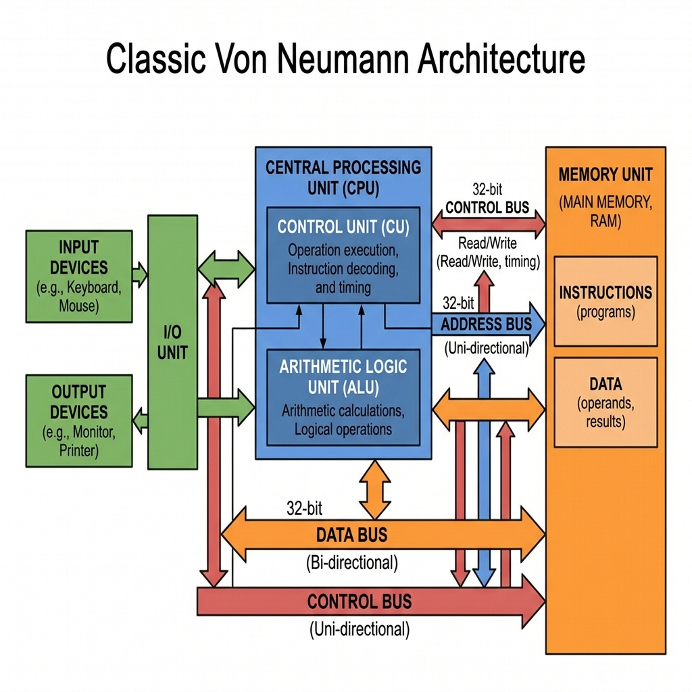
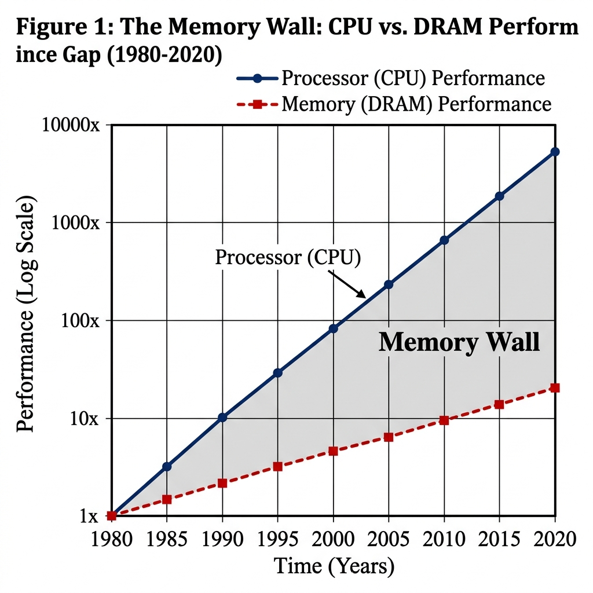
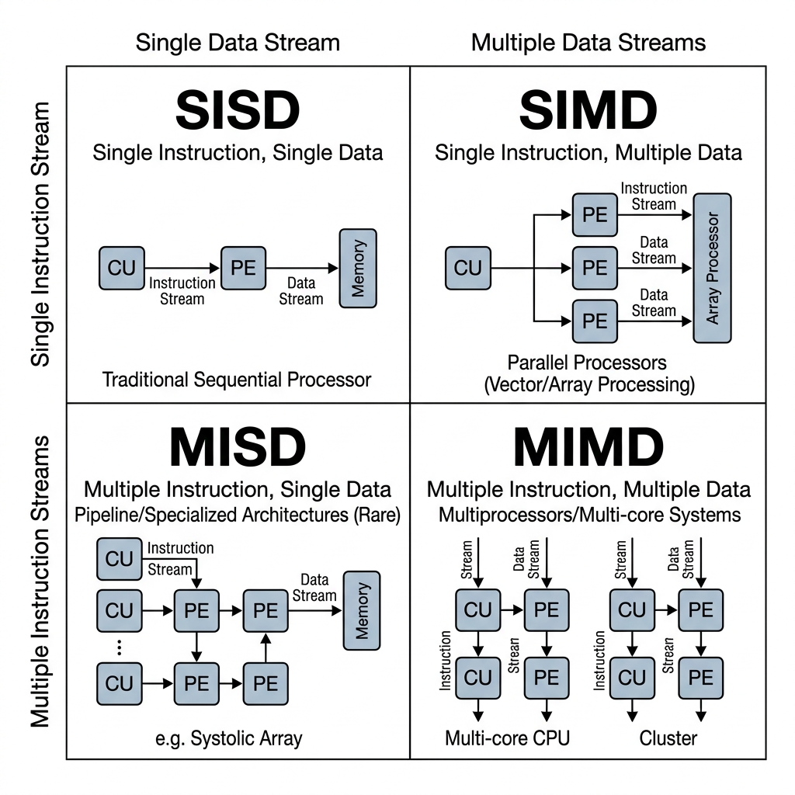

Introduction to HPC & Architectures
Supercomputing Foundations, Flynn's Taxonomy & Amdahl's Law (Ch. 1 & 2)- Critique the definition of High Performance Computing relative to standard IT infrastructure in complex environments.
- Evaluate the role and impact of the South African HPC ecosystem (CHPC, DIRISA, SANReN) on regional research.
- Analyze cluster performance using FLOPS and interpret top-tier benchmarking standards (Top500).
- Contrast and evaluate the Von Neumann and Harvard architectures in the context of modern supercomputing.
- Formulate strategies to mitigate the Memory Wall problem using advanced cache hierarchies.
- Classify parallel computing systems critically using Flynn's Taxonomy.
- Apply and analyze Amdahl's Law and Gustafson's Law to predict parallel speedup bounds.
1. Introduction to HPC
Let's get one thing straight from the start: High Performance Computing isn't just about having "fast computers." It's the science and engineering of pooling computing power together — hundreds or thousands of machines working as one — to tackle problems that no single desktop or server could ever handle alone (Sterling et al., 2018).
1.1 The Need for Speed (and Scale)
In everyday IT, we tend to think about throughput: how many web requests can a server handle per second? HPC flips the question. Here, what matters is Speedup — how much faster can we solve a single, massive problem by splitting the work across multiple processors?
The real world makes the case better than any textbook. Training large AI models like GPT takes thousands of GPUs crunching through petabytes of text in parallel. In medicine, assembling a complete human genome and hunting for cancer mutations requires raw computational muscle that a single workstation simply can't provide. On the Johannesburg Stock Exchange (JSE), high-frequency trading algorithms analyse market data in microseconds. And right here at home, the South African Weather Service (SAWS) runs daily weather simulations — solving Navier-Stokes equations across a grid covering the entire country — to issue storm warnings.
1.2 Local Context: The South African Cyberinfrastructure Ecosystem
You might think supercomputing is a first-world luxury, but South Africa actually hosts the most advanced research computing infrastructure on the continent. It's all coordinated under the National Integrated Cyber Infrastructure System (NICIS), which stands on three pillars (CHPC, 2024):
- CHPC (Centre for High Performance Computing): Located in Cape Town. Their flagship system, Lengau, is one of the fastest supercomputers in the Southern Hemisphere and is available to SA universities — including VUT.
- DIRISA (Data Intensive Research Infrastructure of South Africa): Handles long-term storage and curation of massive scientific datasets (such as radio astronomy from the Karoo).
- SANReN (South African National Research Network): High-speed 100Gbps fibre backbone moving terabytes between campuses and national supercomputing facilities without bottlenecks.
1.3 Measuring Performance: The FLOP
In scientific computing — where workloads are mathematical — performance is measured in Floating Point Operations Per Second (FLOPS):
1.4 The Top500 List
Every six months, the global supercomputing community publishes the Top500 list, ranking the world's 500 most powerful supercomputers using the High Performance Linpack (HPL) dense matrix benchmark.
2. System Architecture
Nearly every modern computer follows the Von Neumann Architecture proposed in 1945.
2.1 The Von Neumann Model & Bottleneck
In a Von Neumann computer, instructions and data reside together in main RAM and travel across a single shared system bus. Because CPU clock cycles run exponentially faster than the memory bus bandwidth, the processor experiences the Von Neumann Bottleneck, sitting idle while waiting for RAM data.

Figure 1: The Von Neumann Architecture — a shared bus connects CPU, Memory, and I/O.
2.2 The Harvard Architecture
The Harvard Architecture provides separate physical buses for instructions and data. Modern server processors (AMD EPYC, Intel Xeon) use a Modified Harvard Architecture internally — keeping separate L1 Instruction (L1i) and L1 Data (L1d) caches while presenting a unified memory space.
3. The Memory Wall and Caching
3.1 The Memory Wall
Over the last 40 years, CPU speed grew exponentially while DRAM latency improved linearly. This gap is the Memory Wall. A 4GHz CPU core executes a cycle in 0.25ns, but fetching from DRAM takes ~100ns (a 400-cycle stall penalty).

Figure 2: The Memory Wall — widening gap between CPU clock rate and DRAM access speed.
3.2 Solution: Cache Hierarchies & Locality
Caching relies on Temporal Locality (reusing recently accessed data) and Spatial Locality (accessing adjacent memory addresses).
- L1 Cache: 32KB–64KB per core, ultra-fast (~1ns latency).
- L2 Cache: 512KB–1MB private per core (~3ns latency).
- L3 LLC Cache: 32MB–1GB shared across core complexes (~12ns latency).
4. Processor Architecture & Flynn's Taxonomy
4.1 Flynn's Taxonomy
Flynn's Taxonomy classifies parallel computers based on instruction and data streams:

Figure 3: Flynn's Taxonomy — SISD, SIMD (vectorization/GPU), and MIMD (clusters).
- SISD: Single Instruction, Single Data (legacy single-core CPU).
- SIMD: Single Instruction, Multiple Data (AVX-512 vector units & GPUs).
- MIMD: Multiple Instruction, Multiple Data (multi-node supercomputer clusters).
4.2 Amdahl's Law vs Gustafson's Law
Amdahl's Law (Strong Scaling) defines theoretical speedup $S$ capped by serial fraction $(1-p)$:
$$ S = \frac{1}{(1-p) + \frac{p}{s}} $$Gustafson's Law (Weak Scaling) models expanding problem sizes on supercomputers:
$$ S_p = p + (1-p)s $$5. Career Pathways & Self-Assessment
HPC skills prepare students for careers as HPC Systems Engineers, Cloud Infrastructure Architects, Site Reliability Engineers (SRE), and Research Software Engineers (RSE).
Test Your Knowledge
Ready to test your understanding of Week 1 concepts? Take the interactive quiz to reinforce key ideas.
Take Week 1 Quiz Now